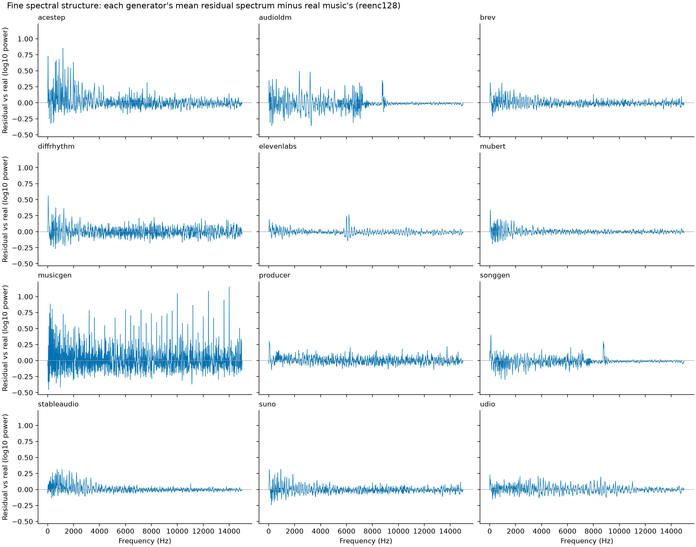
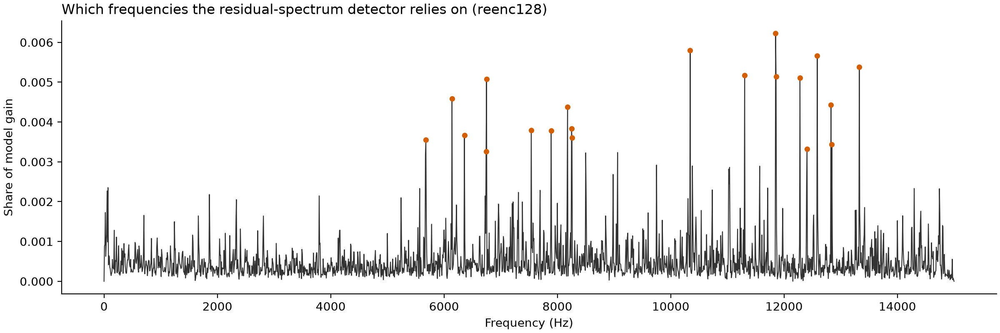

Spectral Fingerprints of AI Music Generators
A 2.5 MB detector that halves the published error on the Echoes benchmark, runs 115× faster than real time on one CPU thread, and shows exactly what gives each generator away.
All headline numbers are after re-encoding every real and AI track identically (see “The encoding confound”).
The question
Echoes (2026) is a deliberately hard benchmark for AI-generated music: 4,468 tracks from 12 generators (Suno v5, Udio, ElevenLabs, Stable Audio, MusicGen and others), each made to imitate one of 296 real songs from the Free Music Archive. Its baseline detector is a frozen 2-billion-parameter Wav2Vec2 XLS-R model with logistic regression on top, reaching 15.3% equal error rate (EER) in-domain and 22.3% on generators held out of training.
Can traditional machine learning, meaning hand-built features and gradient-boosted trees, compete?
Method
- Fine spectrum: long-term average log power per 7.8 Hz bin, 0–15 kHz (FFT size 4096).
- Spectral residual: that spectrum minus a smoothed copy, keeping only narrow peaks and dips. This is the strongest single feature set.
- MFCC statistics (20 coefficients plus deltas) and a path signature of eight band energies over time, both secondary.
Protocol follows the paper: 10-second segments and segment-level EER, with one stricter change. Train and test are split by reference song, so a real song and all of its AI imitations always fall on the same side. Results are means over 5 random 80:20 splits.
Results
In-domain (generators seen in training)
| Features | Segment EER | Track EER |
|---|---|---|
| All combined (9,142 features) | 0.084 ± 0.006 | 0.031 |
| Spectral residual only (1,921) | 0.099 | 0.043 |
| Fine spectrum only (1,921) | 0.171 | 0.098 |
| MFCC 20 statistics (80) | 0.276 | 0.177 |
| Band-energy path signature (5,220) | 0.348 | 0.225 |
| Echoes paper: Wav2Vec2 XLS-R 2B + LR | 0.153 | — |
The spectral residual alone beats the published baseline. Averaging a track's segments brings EER to about 3%.
Per generator
| Generator | Seen: paper | Seen: ours | Unseen: paper | Unseen: ours |
|---|---|---|---|---|
| AudioLDM | 17.4% | 1.2% | 27.5% | 11.4% |
| SongGen | 12.7% | 2.4% | 20.6% | 9.2% |
| Suno | 13.5% | 4.2% | 16.5% | 5.5% |
| DiffRhythm | 9.0% | 4.2% | 11.4% | 32.1% |
| MusicGen | 12.6% | 4.5% | 22.8% | 30.0% |
| AceStep | 13.3% | 5.2% | 19.4% | 28.5% |
| Brev | 13.9% | 5.2% | 17.1% | 7.4% |
| Producer (Riffusion) | 13.9% | 6.1% | 18.6% | 26.6% |
| ElevenLabs | 16.7% | 6.5% | 25.1% | 27.7% |
| Udio | 15.6% | 9.9% | 24.9% | 31.0% |
| Stable Audio | 20.5% | 12.2% | 31.1% | 25.7% |
| Mubert | 21.7% | 25.8% | 33.2% | 34.8% |
| Mean | 15.1% | 7.3% | 22.3% | 22.5% |
“Unseen” = leave one generator out of training, test on real music vs. that generator. Ours: all features, re-encoded at 128 kbps; segment EER, mean of 5 splits.
Seen generators: about half the error, 11 of 12 better. Unseen generators: parity on average, with large wins on Suno, Brev, SongGen and AudioLDM and clear losses on DiffRhythm, MusicGen and AceStep. The features are sharp but generator-specific: they learn each architecture's fingerprint.
What gives them away

- MusicGen leaves a comb: tall, evenly spaced spikes across the spectrum (regular at about 398 Hz), the classic trace of an upsampling or codec decoder.
- AudioLDM and SongGen go flat above about 7–9 kHz with a sharp edge near 8.8 kHz, consistent with generating at a low internal sample rate.
- ElevenLabs has a distinctive bump near 6 kHz.
- Suno and Brev share the same ripple spacing (about 469 Hz) and cover for each other when either is held out, matching the Echoes paper's observation that the two are confused in attribution.
- Mubert is closest to real music and hardest to catch, consistent with assembling tracks from human-made loops rather than synthesizing audio.

The encoding confound
Echoes does not ship the real audio; it is rebuilt from the Free Music Archive. The two sides arrive encoded very differently:
| Source | Typical MP3 bitrate |
|---|---|
| Real (FMA) | 256–320 kbps (median ~306) |
| Most generators | 128 kbps |
| ElevenLabs | 192 kbps |
| MusicGen | ~512 kbps (near-uncompressed) |
File bitrate alone separates real from AI with AUC 0.84. Any detector that sees high frequencies can partly learn “high bitrate = real.” So every track, real and AI, was re-encoded through the same MP3 encoder at the same settings, and the whole pipeline rerun:
| Audio | Segment EER | Track EER |
|---|---|---|
| Original files | 0.071 | 0.025 |
| All re-encoded, 128 kbps | 0.084 | 0.031 |
| All re-encoded, 96 kbps | 0.093 | 0.041 |
How simple is it?
| This detector | Echoes baseline | |
|---|---|---|
| Model | XGBoost, 600 trees, 61,760 nodes | Wav2Vec2 XLS-R, ~2B parameters |
| Size | 2.5 MB | ~8 GB (float32) |
| Hardware | one CPU thread | GPU for practical speed |
| Time per 10 s segment | 87 ms end to end (115× real time) | — |
| Interpretable | yes: individual frequency bins | no |
Limitations
- Unseen generators remain hard: parity with the baseline, not a win. The features capture architecture-specific fingerprints.
- Mubert is barely detectable by either approach.
- One dataset, with 296 real songs; test splits contain about 60 real songs each, hence the 5-split averages.
- Our split by reference song is slightly stricter than the paper's track-level split, so comparisons are, if anything, conservative.
- Spectral fingerprints may fade as generators improve their decoders or deliberately suppress artifacts.
Reproduce
Everything runs on a single workstation with Python and uv. The Echoes AI tracks come from Hugging Face. The 296 real tracks are matched to FMA by title and artist (296/296 exact) and pulled out of the 879 GB fma_full.zip with HTTP range requests, about 2.4 GB in total. Full commands are in the repository README.